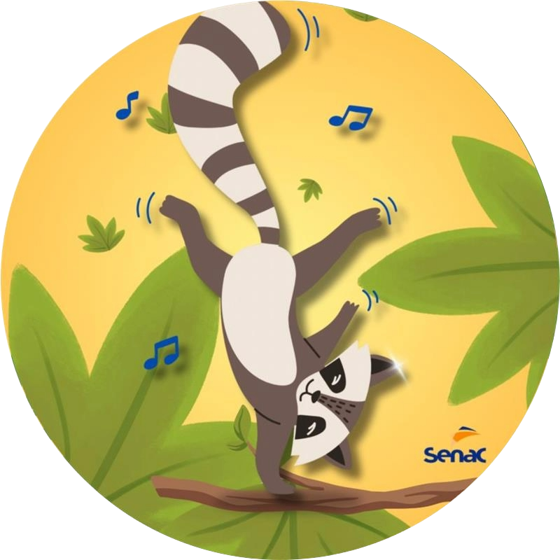

Aprendendo com Racco
Faculdade Senac Fecomércio - Projeto Integrador

Este jogo foi projetado para crianças com espectro autista, oferecendo uma experiência visualmente clara e estruturada. Ele utiliza tarefas simples para ajudar no desenvolvimento de habilidades cognitivas e sociais. O jogo é pensado para ser previsível e inclusivo, proporcionando uma experiência educativa e divertida em um ambiente seguro e controlado, com configurações diferentes (opção de "filtros") para os demais graus apresentados nessa deficiência intelectual.
Estourando Bolhas
Nesta fase, o jogador deve estourar bolhas de sabão que flutuam pela tela. O objetivo é simples e direto, ajudando a melhorar a coordenação motora e a atenção visual.
Benefícios
- Coordenação Motora: Ajuda a desenvolver a coordenação entre os olhos e as mãos, essencial para diversas atividades diárias.
- Concentração: Requer foco e precisão, promovendo a atenção aos detalhes e a capacidade de seguir instruções simples.
- Reforço Positivo: O feedback imediato e as recompensas ajudam a manter o engajamento e proporcionam um sentimento de realização.
Ligar os Pontos
Nesta fase, o jogador deve conectar uma série de pontos para formar um desenho. O objetivo é criar uma imagem completa, o que ajuda a desenvolver a coordenação motora fina e a percepção visual.
Benefícios
- Coordenação Motora Fina: A atividade requer movimentos precisos para conectar os pontos, o que ajuda a melhorar a coordenação entre os olhos e as mãos.
- Percepção Visual e Espacial: O jogador desenvolve habilidades para seguir sequências e entender como os pontos se conectam para formar uma imagem completa.
- Exploração Criativa: A escolha de desenhos e a revelação do resultado estimulam a criatividade e a curiosidade.
- Reforço Positivo: Completar um desenho oferece uma sensação de realização e satisfação, reforçada por animações ou efeitos visuais que destacam o sucesso.
Microfone
Nesta fase, o jogador deve ouvir áudios com palavras e frases específicas e repeti-las usando o microfone do aparelho. A principal meta é ajudar no desenvolvimento da fala e na melhoria da comunicação, especialmente para crianças com dificuldades relacionadas ao espectro autista.
Benefícios
- Atrasos na Fala: A prática repetitiva ajuda a desenvolver a clareza e a fluência na fala, abordando atrasos na linguagem e melhorando a capacidade de iniciar e manter conversas.
- Compreensão da Linguagem Não Verbal: O jogo pode incorporar elementos visuais, como imagens e vídeos, para complementar a compreensão da comunicação não verbal.
- Desenvolvimento da Comunicação: As crianças têm a oportunidade de melhorar sua capacidade de expressar necessidades e se conectar com os outros, o que é crucial para a inclusão social e a compreensão.
Regras de Jogo – Aprendendo com Racco
Objetivo do Jogo
Completar as tarefas de cada fase para desenvolver habilidades motoras, cognitivas e sociais.
Estourando Bolhas
- Estourar o maior número possível de bolhas.
- Cada bolha estourada rende pontos.
- O jogador pode escolher entre um modo cronometrado ou livre de tempo.
- Ao final do tempo ou do número de bolhas, o jogador recebe uma pontuação.
Ligar os Pontos
- Conectar pontos numerados na ordem correta.
- Completar a figura para ganhar pontos.
- Os desenhos se tornam progressivamente mais complexos à medida que o jogador avança.
- O jogador pode selecionar diferentes desenhos na galeria.
Microfone
- Ouvir uma palavra ou frase e repeti-la corretamente.
- O jogo oferece feedback sobre a precisão da repetição.
- Cada resposta correta resulta em pontos.
- O nível de dificuldade aumenta com frases mais complexas.
Feedback e Recompensas
Após completar cada tarefa, o jogador recebe feedback visual e sonoro positivo. O desempenho é recompensado com pontos, animações e novos níveis desbloqueados.
Tempo de Jogo
O jogador pode decidir a duração de cada sessão, com a opção de pausas a qualquer momento.
Configurações de Acessibilidade
O jogo pode ser ajustado para diferentes níveis de dificuldade e estímulos sensoriais, conforme necessário.
Interação Social
O jogo pode ser jogado em modo multiplayer, onde os jogadores podem competir ou colaborar em tarefas.